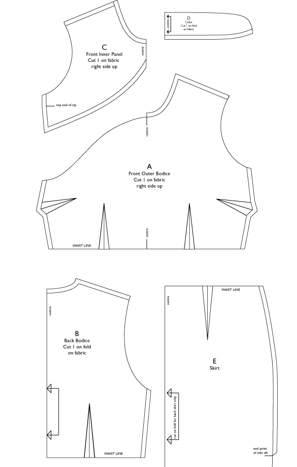
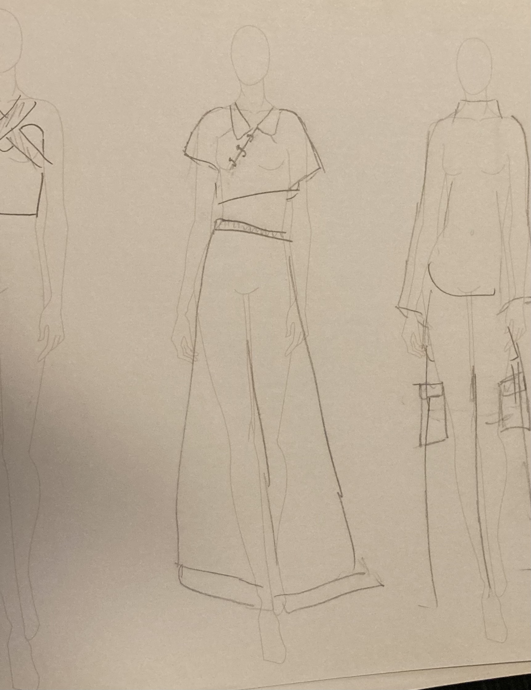
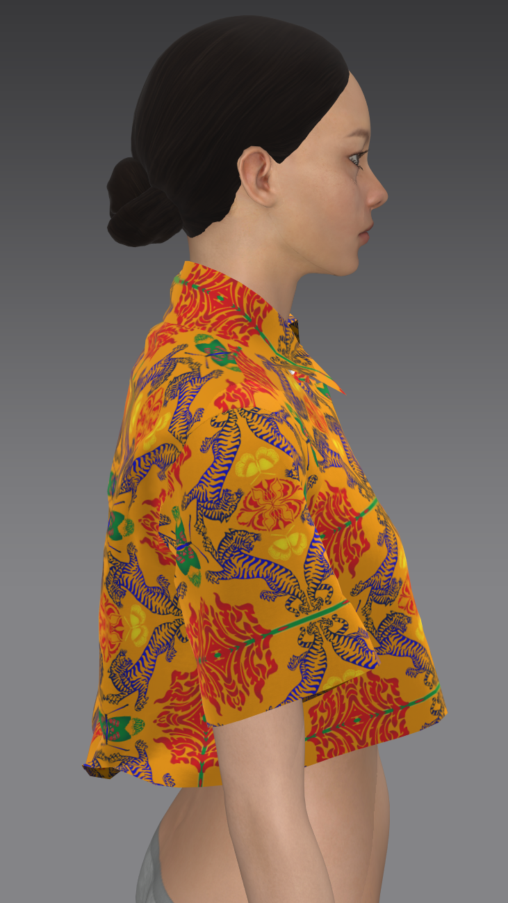
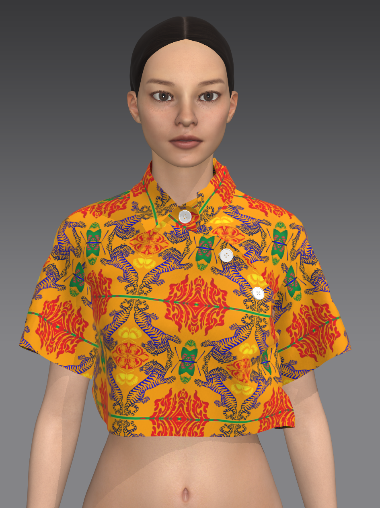
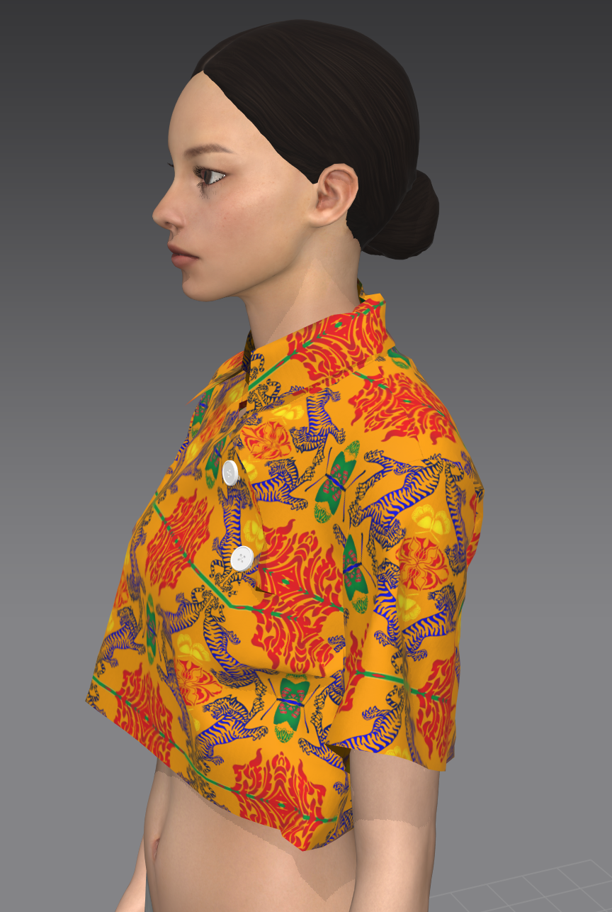
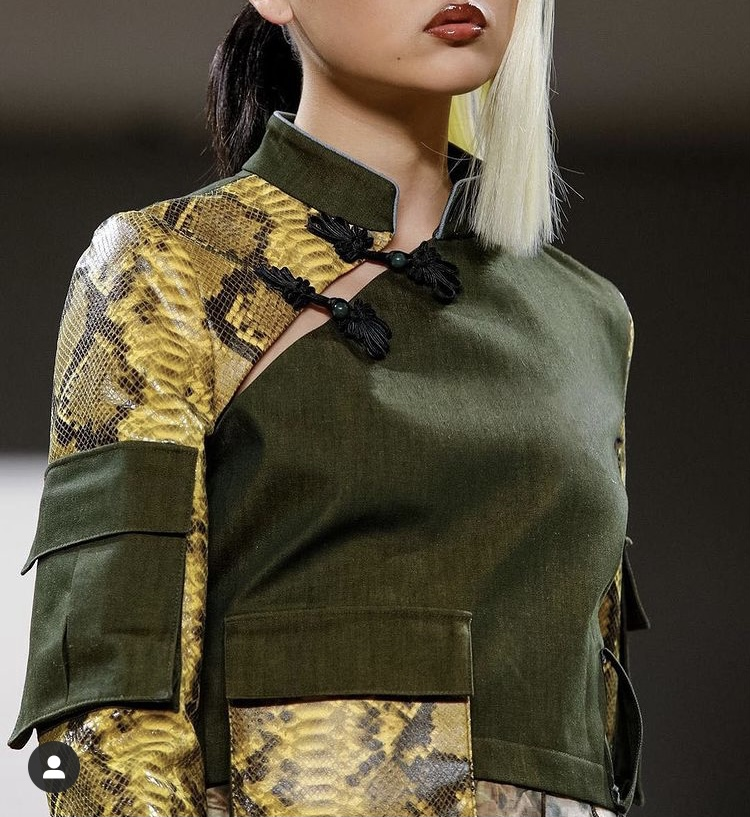
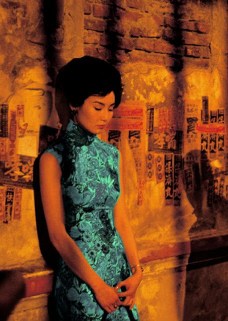
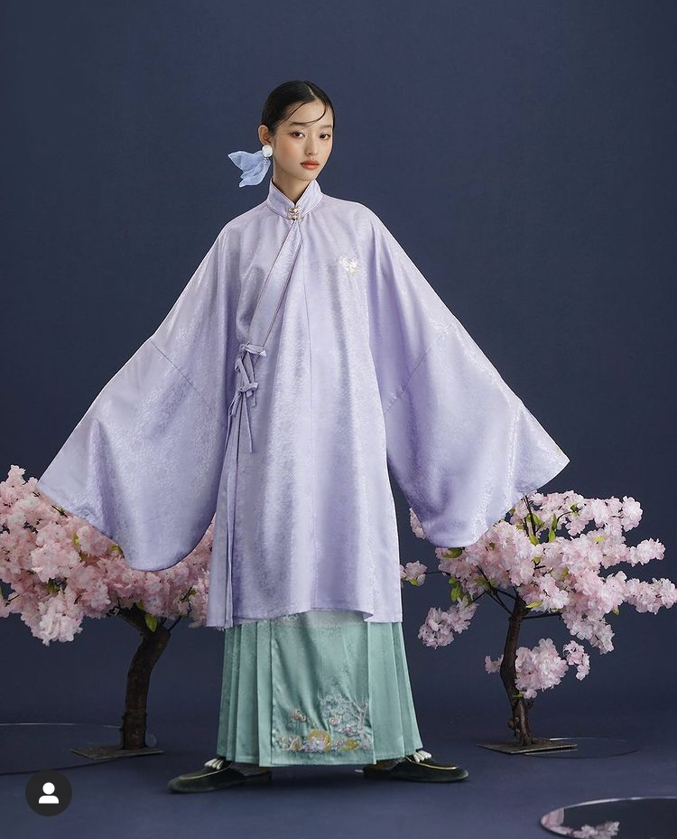

While the cheongsam reached its peak popularity in the early 20th century, its roots lie in the changpao, a long robe worn by women in the Qing dynasty. During that time, the Manchu ruled over the Han and imposed strict dress codes that forced Han people to adopt Manchu styles of dress, thus leading to the widespread popularization of the changpao. It had the similar asymmetrical collar finish but with wide sleeves and slits on the legs to facilitate movement. With the end of the 1842 Opium War, the trade regulations imposed by the British saw the opening up (for trade) and subsequent westernization of many Chinese cities, such as Shanghai. This led to the entrance of western influences into modes of dress and tailoring.
Some sources attribute the "modernization" of the changpao towards a highly fitted and short-sleeved dress to the entrance of western "feminism" into China, which I personally find a little bit confusing because from what I remember the suffragettes weren't exactly fighting for the right to dress. Other sources point to young college students in Shanghai as the original trendsetters. And yet other sources point mostly towards Chinese celebrities, socialites and politicians and Hollywood (with the globalization of chinese aesthetics in the west) as the main source.
Regardless of its origins, the cheongsam quickly became a piece that symbolized a sexy and modern version of China.

Fabrication
The cheongsam can be made out of cotton or silk. It is cut like a regular sheath dress, except for the "mandarin"collar and the asymmetrical panels in the front. Personally, I think it is one of the most flattering cuts out there, and I had a lot of fun looking at contemporary designers' takes on this silhouette.
Making Our Own
For this series entry, I decided to make a cheongsam inspired shirt. I combined the assymetrical pattern of the qipao with one of a tailored, button up stiff cotton shirt to make
an oversized crop top. The print was designed by Anika Nishat. As the cheongsam can be a highly tailored piece, making this in CLO3D was relatively straighforward. Instead of the flower
buttons that usually adorn the cheongsam, I used regular ivory buttons, but would like to in the future
experiment with neon-colored flower fastens.

Paper
Clo3D

Side
Back

Front
Side 2

2Day/Tmrw

Kim Shui, FW 2019

Maggie Cheung, In the Mood for Love, 2001

Hanfu Style Dress, Mukzin


{kind=link}
{kind=link}
{kind=link}
{kind=link}
{kind=link}
{kind=link}
{kind=link}
{kind=link}
{kind=link}